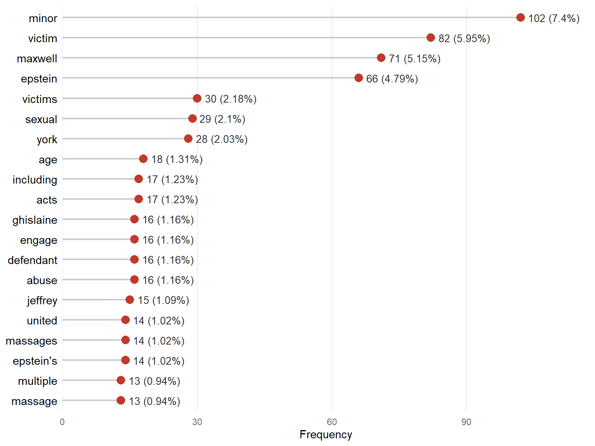
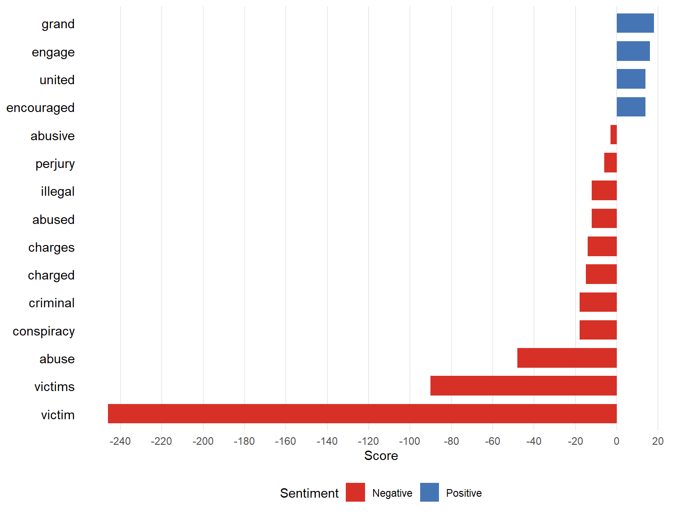
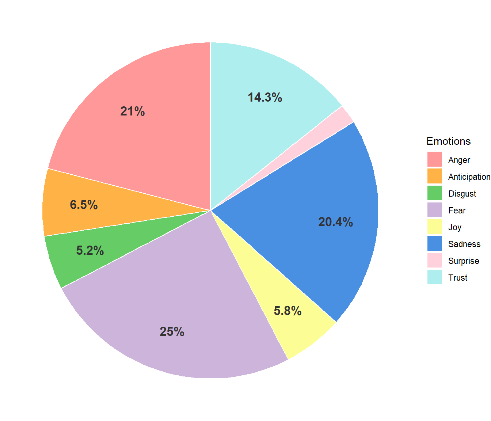
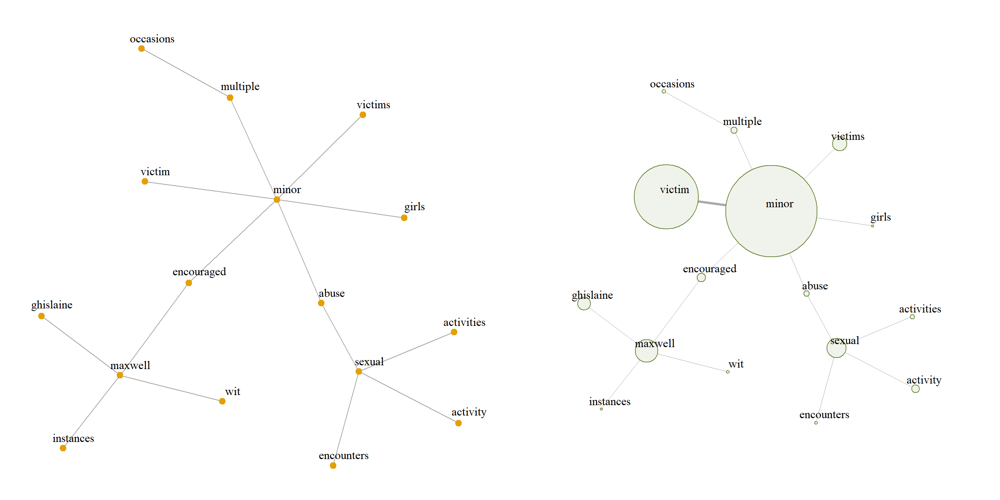
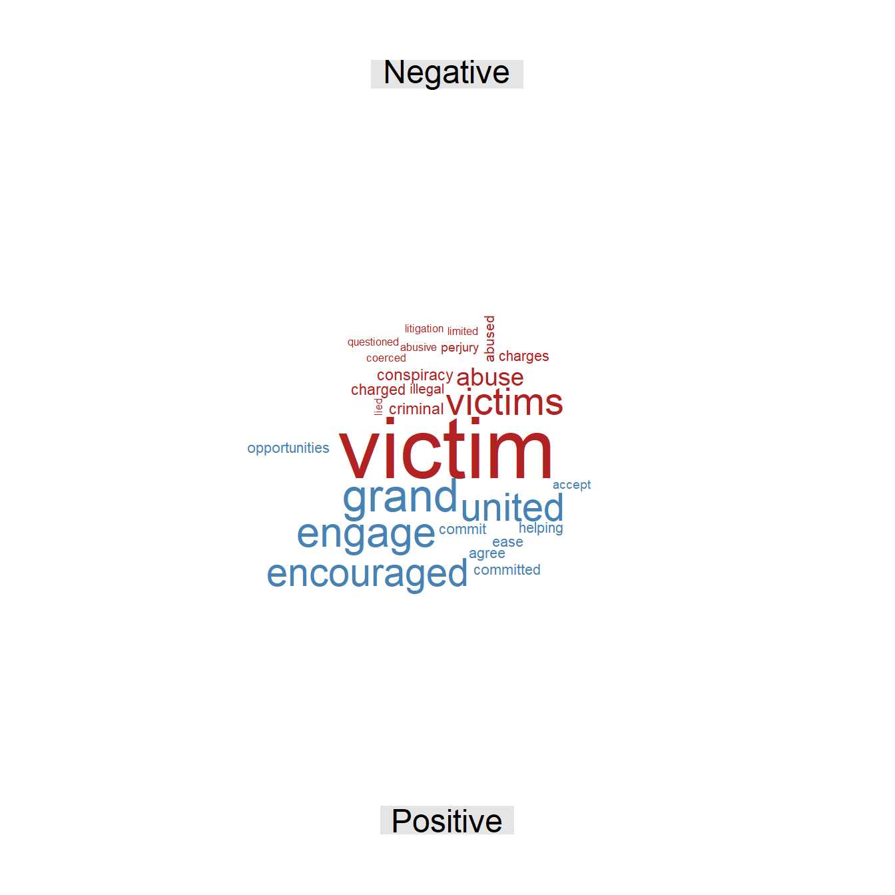
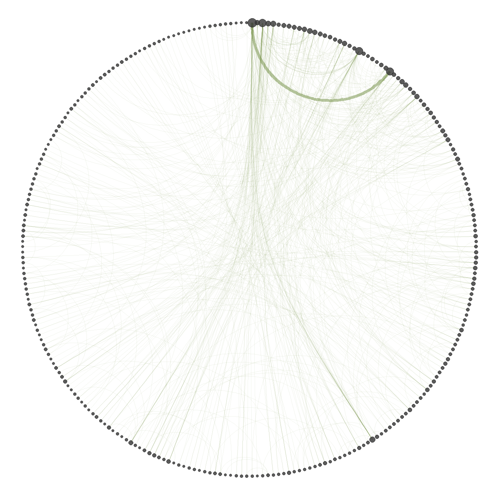
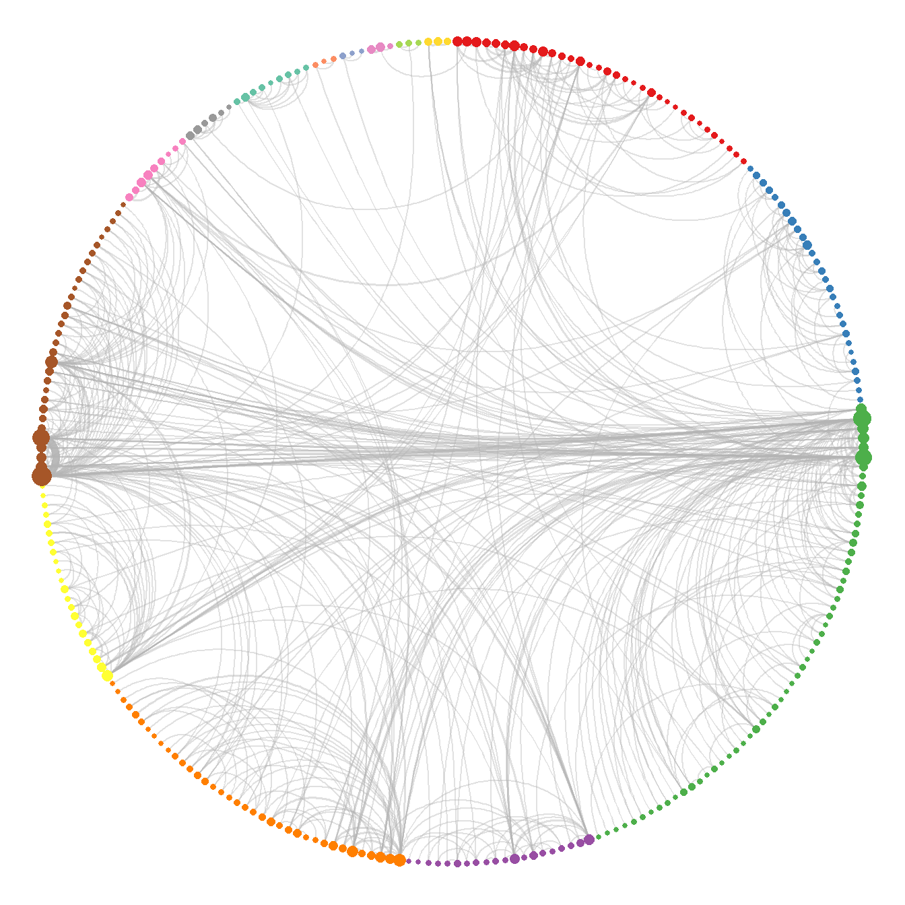

United States v. Maxwell
Federal indictment, June 2020
| Document type | Federal indictment |
| Court | U.S. District Court for the Southern District of New York |
| Case number | 20 Cr. 330 |
| Source | U.S. Department of Justice |
| Words (cleaned text) | 3,171 |
| Note | The document was transcribed manually. |
This legal document is a criminal indictment brought by the United States Government against Ghislaine Maxwell in the U.S. District Court for the Southern District of New York. The prosecution alleges that, between 1994 and 1997, the defendant assisted, facilitated, and contributed to Jeffrey Epstein’s sexual exploitation and abuse of multiple minor victims, some as young as 14. According to the charges, Maxwell recruited and groomed the girls by building a relationship of trust in order to normalize the abusive conduct, encouraging them to give Epstein massages of a sexual nature, sometimes in exchange for financial or educational support, at his residences in Manhattan, Palm Beach, Santa Fe, and London. The indictment alleges the defendant’s direct participation in the conspiracy and in the interstate transportation of minors for criminal purposes, and also charges her with perjury for allegedly lying under oath during depositions in 2016 in order to conceal her conduct.
Word frequency
Figure 1 shows the most frequent terms in the text. First, the term “minor” has a relative frequency of 7.4%, a considerably high percentage for this type of analysis. As the most frequent word, it shows that the age of the alleged victims is one of the central axes of the indictment, carrying great weight throughout the case. This is complemented by the next most frequent word, “victim”, which confirms the constant reference to those affected. The following terms refer directly to the two alleged perpetrators, “Maxwell” and “Epstein”, including variants related to their first names or to her status as defendant, which confirms their role as main actors given their high frequency. Finally, concepts linked to the legal definition of the offenses, the modus operandi, and the places associated with the events stand out.
The word cloud in Figure 2 shows no new terms compared with the bar chart. That is, beyond the terms already discussed, there are no additional concepts of significant relevance to the analysis of the case. This corroborates the previous observations and confirms a marked difference between these central terms and the rest, showing that the main words dominate the text, since no other words have similar frequencies.
The frequency analysis shows that the text revolves markedly around a small core of highly recurrent terms, whose use is much higher than that of the rest of the vocabulary. It also identifies the centrality of the age of the alleged victims, with the term referring to their minority being the most frequent in the document. Finally, there are three main groups of words that appear repeatedly throughout the case: those referring to the victims, to the alleged perpetrators, and to the nature of the alleged crimes.
Sentiment analysis
Figure 3 shows that the term “victim” has a disproportionate score compared with the other terms. This implies that both the negative sentiment and the overall tone of the text are characterized by the recurrence and weight of this word. Moreover, most of the predominant concepts, such as “abuse”, “conspiracy”, “victims”, “criminal”, and “perjury”, refer directly to the accounts of the alleged victims and to the charges. It can therefore be inferred that the negative sentiment of the case is directly linked to the vulnerability and experiences of the victims described in the criminal proceedings.

Positive sentiment consists of four terms, two of which refer to institutional and legal entities: “grand” and “united” (associated with the grand jury and the United States). These terms therefore have no real positive connotation in the context of the document. The other two words, “encouraged” and “engage”, refer directly to the methods allegedly used to recruit new victims. Consequently, a genuinely positive emotional charge in the text is ruled out, since these terms appear because of legal formalities or the description of the alleged modus operandi, elements that do not evoke that emotion.

The pie chart of emotions in Figure 4 shows that the predominant emotions, which account for almost 75% of the words, are anger, fear, and sadness. These emotions reflect the impact and weight of the accounts of systematic and prolonged abuse over the years; according to the indictment, this was not a matter of isolated assaults, but of a complex and structured recruitment scheme. This is confirmed by the low presence of joy, whose low frequency accentuates the contrast with the previous categories and shows that the overall tone of the document evokes mostly negative emotions.
This analysis shows that both positive sentiment and the emotions related to it, such as joy, are very weak, being clearly outweighed by a generalized negative sentiment and by the emotional states related to it. The terms referring to the victims and their experiences are the ones that give most of the text its negative tone. Moreover, the words initially classified as positive do not refer to positive elements in the actual context of the indictment, which confirms the absence of genuinely positive components in the document.
Word relationships
The bigram network was built from the bigrams with a frequency of at least 3, in order to obtain an informative network rather than a noisy one, thus keeping the most relevant information in the text. The analysis uses the largest connected component of the graph, since it concentrates the most relevant information.

Figure 5 shows that the vertices with the highest strength are “victim” and “minor”, and the edge connecting them has the highest weight in the whole network. This pair is clearly central and important in the text. The term that connects “Maxwell” with “minor” is “encouraged”, a key link that illustrates the alleged process of recruiting minors and the type of conduct to which they were allegedly subjected, seen in the graph through connections such as “sexual encounters” and “sexual activity”. Finally, the pair “multiple occasions” stands out, which reflects the allegedly repeated and systematic nature of the abuse suffered by the victims, in which the defendant appears as a main actor.
The bigram network shows that two vertices concentrate a much greater strength than the rest of the graph. The analysis also helps to understand the nature of Maxwell’s alleged relationship with the victims and how the two parties interacted. Finally, the absence of Epstein from the network is striking, which suggests that the central theme of the indictment revolves around Maxwell and her alleged participation in the offenses described; Epstein is thus a crucial actor for the context, but secondary when the events and their relationship with the actors of the network are set out.
The skipgram network is built with all pairs, regardless of their frequency, which makes it possible to find semantic relationships that are not perceptible at first sight. The largest connected component is also used, since it contains the most important information and allows the computation of statistics that are not defined on a disconnected graph, such as the mean distance between vertices.
| Word 1 | Word 2 | Freq. | Rel. freq. |
|---|---|---|---|
| Minor | Victim | 78 | 6.93% |
| Minor | Victims | 19 | 1.69% |
| Ghislaine | Maxwell | 16 | 1.42% |
| Maxwell | Defendant | 16 | 1.42% |
| Jeffrey | Epstein | 12 | 1.07% |
| Maxwell | Minor | 12 | 1.07% |
| Maxwell | Epstein | 11 | 0.98% |
| Sexual | Activity | 10 | 0.89% |
| Southern | District | 10 | 0.89% |
| Title | United | 10 | 0.89% |
Table 1 presents the most frequent skipgrams. Strikingly, the first skipgram has a much higher relative frequency than the rest, close to 7%, while the remaining pairs are around 1%. This shows the importance of the association between “victim” and “minor” in the text, a pattern confirmed by the second most frequent skipgram, which repeats it with the plural form. The following associations refer directly to the alleged perpetrators and to their interaction, notably “Maxwell minor” and “Maxwell Epstein”, which suggests that, although no skipgram among the top positions directly links Epstein with the victims, there is a connection mediated by Maxwell. Finally, the pair “sexual activity” stands out, showing the intrinsic nature of the alleged offenses.
| Statistic | Value |
|---|---|
| Mean distance | 5.64 |
| Mean degree | 4.25 |
| SD of degree | 6.47 |
| Clique number | 5.00 |
| Density | 0.02 |
| Transitivity | 0.13 |
| Assortativity | -0.14 |
| Word | Centrality |
|---|---|
| Minor | 1.00 |
| Victim | 0.95 |
| Maxwell | 0.26 |
| Victims | 0.24 |
| Encouraged | 0.15 |
| Epstein | 0.14 |
| Abuse | 0.12 |
| Defendant | 0.07 |
| Provided | 0.06 |
| Ghislaine | 0.06 |
Table 2 shows that the mean distance of the network is 5.64; that is, on average, more than five steps are needed to go from one word to another. Being a moderate value, it suggests a less centralized narrative, in which the different concepts and actors are connected more gradually throughout the text. This interconnection is supported by the mean degree of 4.25, meaning that each word is directly connected to slightly more than four different terms on average. However, the standard deviation of the degree is high (6.47) compared with its mean, which reveals great variability: a few words are connected to many others, while most have very few connections. In other words, there are hub words that appear next to many different terms, which points to very marked themes in the text.
Regarding the grouping of words, the clique number is 5, meaning that the largest group of words that are all connected to each other has 5 terms; such a structure usually reflects a frequently repeated central argument or words that always appear together. At the global level, however, the density of the network is 0.02, meaning that only 2% of all possible connections are present; the network is therefore very sparse, as is usual in word networks with a large and varied vocabulary. Consistently with this sparsity, the transitivity is 0.13, so there is only a 13% probability that two words connected to the same term are also connected to each other (forming triangles), which reflects a structure with low cohesion. Finally, the degree assortativity is negative (-0.14), indicating a mild tendency of highly connected words to link with words that have few connections, rather than with other central words.
Table 3 shows the most important words in the text according to eigenvector centrality. Notably, the first terms, “minor” and “victim”, have much higher values than all the other words, which shows that they act as the central axis of the whole document and that the rest of the vocabulary is organized around them. The next most relevant terms refer to the main actors, such as Maxwell, Epstein, and the victims, and to the relationships among them; this is reflected in words such as “abuse”, which refers to the alleged criminal link between the victims and Epstein; “encouraged”, which describes Maxwell’s alleged role in recruiting the minors; and “provided”, which describes the alleged logistical and operational cooperation between Maxwell and Epstein.
| Cluster | Size | Word | Strength |
|---|---|---|---|
| 1 | 34 | York | 27 |
| United | 22 | ||
| Section | 22 | ||
| 2 | 28 | Knowingly | 15 |
| False | 13 | ||
| Entice | 8 | ||
| 3 | 57 | Maxwell | 136 |
| Epstein | 114 | ||
| Jeffrey | 36 | ||
| 5 | 37 | Sexual | 52 |
| Acts | 31 | ||
| Engage | 26 | ||
| 7 | 31 | Minor | 191 |
| Victim | 121 | ||
| Victims | 51 |
Table 4 presents the words with the highest strength in the five largest clusters obtained with the fast greedy algorithm. The largest cluster is characterized by the terms “Maxwell”, “Epstein”, and “Jeffrey”, which shows that these two people are almost intrinsically related in the indictment and that its main thematic axes revolve around them. Cluster 5 refers directly to the alleged criminal conduct related to the abuse and the sexual exploitation network, while cluster 2 refers to the offenses related to lying under oath. Cluster 7 groups the terms closely linked to the victims and their vulnerability. Finally, cluster 1 concentrates the legal terminology used throughout the indictment.
Additional figures


